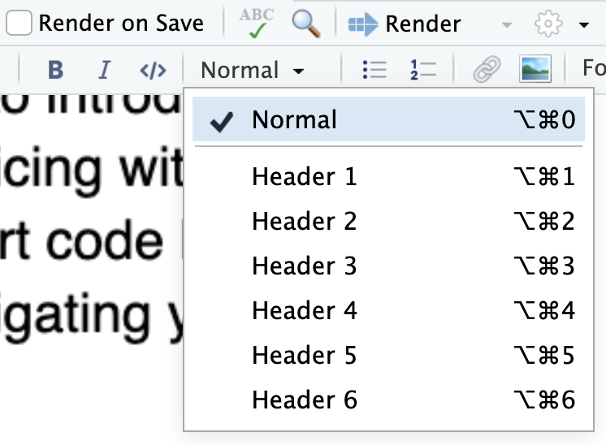
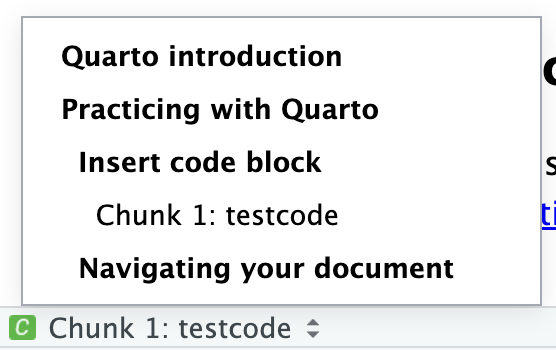

Quarto is a document container that allows you to mix text and code to produce reproducible (see here for why reproducibility is important) results and auto-generate high quality document.
To start with, let’s complete the online Quarto tutorial, you can find it here
Download the file in the tutorial and examine all of the parts of the tutorial listed on the website. Try changing around some of the text and code. And rendering. See how it changes your final document.
Once you have successfully made some edits to the Quarto document and rendered it, show it to me so that I can verify you have completed it before moving on to the next step.
Practicing with Quarto
To complete this lab, please do a simple investigation into the distribution of mpg (miles per gallon) and wt (weight) from the mtcars built-in dataset.
Select File->New Quarto Document
Insert a code block and then make a ggplot that displays the distribution of mpg
Add some text that describes the three features of the mpg distribution
Repeat for the variable wt
Write a brief conclusion of your investigation and then Render the result as an HTML file
A few additional tips to help you along:
Insert code block
In particular, you will need to use the Insert a new code chunk button to add a code block
The code block, like the one shown below, has some options for the code block. In this case, I added the line #| echo: true which means that both the code and the results of the code will be printed on the document. By default, only the results of the code will be shown.
Some other options that will be helpful is setting warning: false and message: false to stop RStudio from printing irrelevant or not helpful text. You can see in the example below that the library(dplyr) line of code prints some nuisance text that would not be printed if I had added the message: false option.
library(dplyr)
Attaching package: 'dplyr'
The following objects are masked from 'package:stats':
filter, lag
The following objects are masked from 'package:base':
intersect, setdiff, setequal, union
mtcars %>%summarise(mean_mpg =mean(mpg))
mean_mpg
1 20.09062
Navigating your document
You can navigate your document one of two ways. The first way to navigate the document is via the Outline window on the right hand side of the document.
To make your document navigable, it is important to specify headings for each of your document sections via the Style menu.

You can also navigate your document by using the menu at the bottom left, which will also let you jump to specific code blocks. This is why it is important to name your code blocks.

Finishing up
Once you’ve done that, please show me your result and then you can keep working your way through the Computations tutorial on the Quarto website until the end of class.